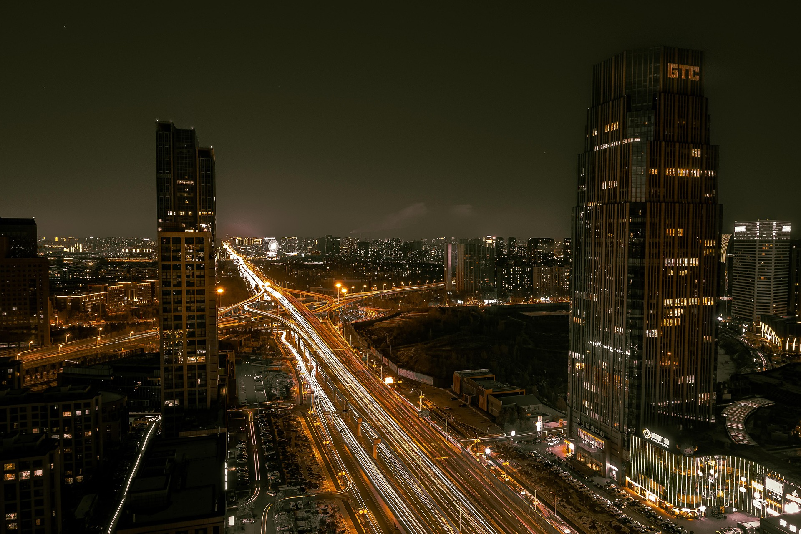
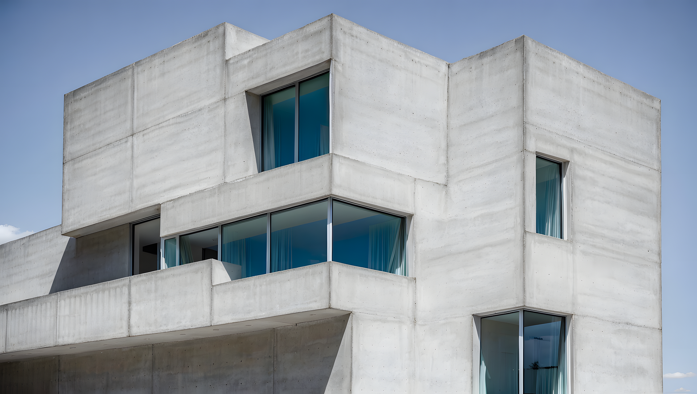
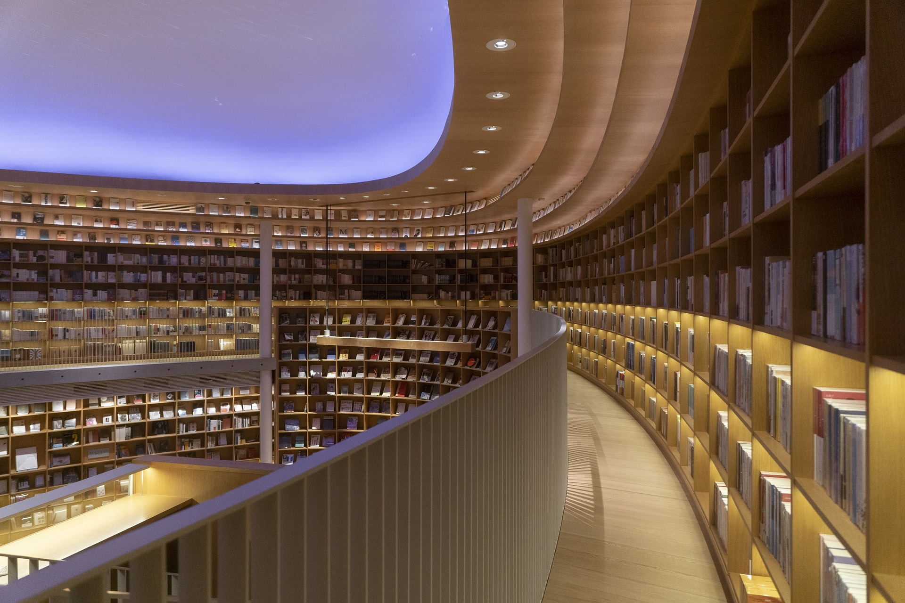

an archival collection of academic and personal projects focusing on structural
integrity, computational design and interactive systems. 2022-2024.
project title
ID_001
Exploration of generative patterns using modular arithmatic. Focus on weight and balance within a constrained 8px grid system.
#systems #typography
interactive skill: css hover effect
ID_002
Demonstrating rapid state conversions and colour inversion through standard CSS utility classes.
Hover over this card to view the visual transformation.
#interactive #motion

project title
ID_003
Multi-dimensional data visualisation for urban traffic flow. Utilising dark-grey scalar
values to represent density and frequency.
#data_viz #algorithmic

project title
ID_004
Design study of brutalist architechture translated into digital interface components.
Emphasis on raw material feel and high contrast.
#brutalism #UI_design

project title
ID_005
Responsive system framework for educational platforms. Prioritising information
heirachy and accessible data nodes.
#framework #ux_research
project title
ID_006
Experimental log of 100 days of layout experiments. Documentation of grid-breaking
patterns and asymmetrical balance.